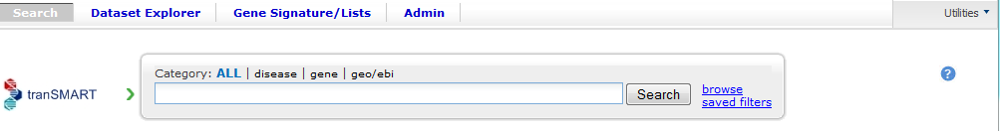

This version 1.1 of the tranSMART documentation was created by tranSMART Foundation and is made available under a Creative Commons Attribution 3.0 Unported License. Earlier versions of this tranSMART documentation were created by Johnson & Johnson and Recombinant Data and used under a Creative Commons Attribution 3.0 Unported License.
Recombinant® is a registered trademark of Recombinant Data Corp. in the United States and other countries.
Other company, product, and service names referenced in the documentation may be trademarks or service marks of others.
This document is licensed under the Creative Commons Attribution 3.0 Unported License.
You are free:
to share – to copy, distribute and transmit the work
to remix – to adapt the work
to make commercial use of the work
Under the following conditions:
Attribution – You must attribute your use of the work in the following manner:
“This version 1.1 of the tranSMART documentation was created by tranSMART Foundation and is made available under a Creative Commons Attribution 3.0 Unported License. Earlier versions of this tranSMART documentation were created by Johnson & Johnson and Recombinant Data and used under a Creative Commons Attribution 3.0 Unported License. The URL for the work is http://transmartfoundation.org/site/OpenSource_tranSMART_User_Guide_v11.pdf.
Recombinant® is a registered trademark of Recombinant Data Corp. in the United States and other countries.
Other company, product, and service names referenced in the documentation may be trademarks or service marks of others.”

**¶
Chapter 1
Chapter 1: Getting Started with tranSMART¶
The tranSMART application reflects the efforts of various informatics groups to integrate data from internal and external data sources within a single data warehouse, and to provide scientific end users the tools to search for, view, and analyze the data in the warehouse.
The core internal data is a historical base of biomarker data from gene expression, RBM, and SNP experiments, including both raw and analyzed data.
External data sources include publicly available resources such as the Gene Expression Omnibus repository and MeSH Ontology.
The tranSMART application presents scientists with a search tool to query this vast ocean of disparate data through a Google-like user interface.
As users become more sophisticated in developing patterns of search terms, they can save and share their efforts with fellow researchers. A second tool, called the Dataset Explorer, allows the properly authorized user to create and study cohorts of patients that have been involved in completed clinical research efforts. Dataset Explorer also provides the user with tools to compare an individual (or group) in one study against a person or cohort in another study.
| There may be some minor differences between the UI objects illustrated in this guide and the ones you see on your screen. | |
|---|---|
Feature Overview¶
tranSMART contains the following major features:
- Search tool
- Dataset Explorer
- Gene Signature Wizard
Search Tool¶
tranSMART provides a Google-like search tool that lets you search across multiple data sources for information related to items of interest, such as biomarkers, diseases, genes, and gene signatures.
The scope of a search can include clinical studies, externally conducted experiments, and in vivo/in vitro studies.
Search tool functionality includes:
- Searching within a particular category, such as diseases, genes, or pathways, or searching across all categories.
- Building complex search criteria that let you precisely define what to search for.
- Saving search criteria for easy recall and re-execution.
- Emailing search criteria to colleagues.
Search Results¶
In searches of experiments, tranSMART displays complete listings of all analyses related to the experiments that are found.
tranSMART flags “meaningful” results in the analysis lists. Meaningful analyses are those where the signature genes are differentially modulated in a statistically significant way, indicating that the associated target is probably affected by the treatment, disease or other topic examined in the experiment.
Search result functionality includes:
- Displaying details of a particular experiment by clicking the name of the trial or experiment in the results list.
- Accessing a number of gene-related sites – Entrez Gene, Entrez Global, GeneCards, and Google Scholar – by clicking the name of a gene in the results list.
- Viewing the technical report or protocol used for an analysis.
- Exporting the complete results list to a Microsoft Excel file.
- Exporting details of a particular study, experiment, or other result to a Microsoft Excel file.
Dataset Explorer¶
The Dataset Explorer, originally based on an i2b2 design, lets you compare two sets of study groups based on one or more points of comparison. You define both the criteria that populate the study groups and the points of comparison between the study groups.
Dataset Explorer uses a standard navigation tree interface to display data from clinical trials, and also employs an intuitive drag-and-drop functionality to help you build the criteria for populating the study groups and to add the points of comparison.
Dataset Explorer functionality includes:
- Saving the criteria used to populate the study groups.
- Emailing the study group criteria to colleagues.
- Using a heatmap to visualize the change in the expression of a specific protein from one sample to another.
- Using principal component analysis (PCA) to reduce the dimensionality of the dataset and to identify new, meaningful variables in the dataset.
- Performing advanced analyses and displaying results in various formats (scatter plot with linear regression, box plot with analysis of variance, etc.)
- Exporting a study or subset of a study to analyze in an external tool.
Gene Signature Wizard¶
tranSMART provides a wizard to help you create and define gene signatures and gene lists.
You can use your gene signature or gene list in tranSMART searches to find studies where the differentially regulated genes match those in your gene signature or list. This can help you develop hypotheses about diseases or treatments that may have similar genes deregulated.
Stored gene signatures can also be used in the analyses functionality of Dataset Explorer.
Gene signature functionality includes:
- Keeping the gene signature or list private so that only you can access it and use it in searches, or making it publicly available to all tranSMART users.
- Cloning an existing gene signature or list – either yours or a public one – as the starting point for creating and defining a new gene signature or list.
- Exporting all details of a gene signature or list to a Microsoft Excel file.
Logging In¶
- To log into tranSMART:
- Type the address of the tranSMART software into your browser’s URL field:
http://transmart.host.com/transmart
The login screen appears:
Tools¶
tranSMART provides the following tools:
- Search – Search across internal and external data sources for research data and literature related to search terms that you provide.
- Dataset Explorer – View study data for subjects that you select, based on criteria that you specify. Also, compare data generated for subjects in two different study groups, based on criteria and points of comparison that you specify.
- Gene Signature/Lists – View definitions of existing gene signatures and add new gene signature definitions.
- Utilities – contains the following submenus:
- Help – Display links to the tranSMART documentation set.
- Contact Us – Email questions, problem reports, enhancement requests, or any other feedback about the tranSMART application.
- About – Displays the version of tranSMART.
Select the tranSMART tool to use by clicking one of the tool tabs at the top of the tranSMART window:

Opening a Particular Tool at Login¶
By default, tranSMART opens the Search tool after you log in. However, you can specify the tool for tranSMART to open immediately after login by including the tool name in the address you type into your browser’s URL field.
To automatically open a particular tranSMART tool immediately after login, use an address listed below:
| The addresses below are case-sensitive. | |
|---|---|
- Search tool – either of the following:
https://transmart.host.com/transmart
https://transmart.host.com/transmart/search
- Dataset Explorer tool
https://transmart.host.com/transmart/datasetExplorer
- Gene Signature/Lists tool
https://transmart.host.com/transmart/geneSignature
Chapter 2
Chapter 2: Search Tool¶
tranSMART provides a Google-like interface for searching across internal data sources as well as external data sources with a single query, based on one or more search filters that you define.
Search Tasks¶
A search filter is the name of a biomedical concept such as a gene, pathway, disease, or other item of medical interest. These filter names are pre-defined in tranSMART. You can browse lists of these filter names and select the filter you want, or type part of a filter name in the Search field, causing tranSMART to display a list of filters that begin with the text you type.
You can base your search on a single search filter or on a multi-filter search string.
Defining a Search Filter¶
There are several ways to define a search filter:
- Type all or part of the filter name directly into the Search field.
- Browse all the pre-defined filters within filter categories (such as diseases).
- Use a saved search filter or search string.
Type the Filter Name¶
To search the internal and external data sources for information related to a filter name:
- Click the tab for the Search tool at the top of the tranSMART window.
- Click the search filter category to search within (for example, search only diseases, or search only genes).
The search engine first filters by the filter category you select, and then filters by the name you type. To search across all filter categories, click all:
| You can only specify one search filter in the Search field shown above. For instructions on creating a multi-filter search string, see Building a Search String on page 11. | |
|---|---|
- Type part or all of the filter name into the Search field.
Up to 20 matches that begin with the text you type are displayed in a dropdown list below the Search field. For example, the following list appears for the search filter bra when searching across all filter categories:
| You can also search for aliases. For example, to find the gene PTK7, you can type part or all of the name PTK7 or its alias, CCK4. | |
|---|---|
- Do one of the following:
- If the name of the filter you want appears in the list, click the filter name. The search begins immediately.
- If the filter name you want does not appear in the list, type a more complete name in the Search field. For example, if you typed only br in the Search field, no entries for “brain diseases” appear in the list. Typing an a after the text you already typed displays a list like the one shown above.
- If no list appears after you type a complete filter name, click the Search button.
To start another search using a new search filter, click clear all above the search result:

Alternatively, you can click the tranSMART logo, or simply type a new filter in the Search field.
See *Working with Search Results* on page 16 for information on viewing and refining search results.
Browse for a Filter Name¶
You can browse through all the pre-defined filters in each of the following areas:
- Disease
- Gene Signature/Lists
- Geo/ebi
- Pathway
To browse the pre-defined filters:
- Click the tab for the Search tool at the top of the tranSMART window.
- Click the browse link to the right of the Search button. A window similar to the following appears:
| The search engine ignores any filter category you may have selected and any filter text you may have entered in the Search field. | |
|---|---|
- Click the tab for the area in which you want to browse for filters.
- To initiate a search for information related to a filter, click the
filter name or the green arrow (
 ) after the name.
) after the name.
After you click a filter, the search begins immediately.
- To browse for another filter, click browse again. There is no need to clear the previous result.
- To start another search using a new search filter, click clear all above the search result:
Alternatively, you can click the tranSMART logo, or simply type a new filter in the Search field.
See *Working with Search Results* on page 16 for information on viewing and refining search results.
Use a Saved Search Filter¶
There are two ways to access a saved search filter:
- Retrieve the saved filter from a list of filters that you created and saved. The instructions in this section describe this method.
- Click a link to a saved filter that someone else has created, saved, and emailed to you.
See Saving a Search Filter or Search String on page 14 for more information, including instructions on saving search filters and search strings.
To search against a filter that you created and saved:
- Click the tab for the Search tool at the top of the tranSMART window.
- Click the saved filters link to the right of the Search button. A list of filters that you created and saved appears:
- To search against a saved filter in the list, click the select link to the right of the saved filter name. The search begins immediately.
- To start another search using a new search filter, click clear all above the search result.
Alternatively, you can click the tranSMART logo, or simply type a new filter in the Search field.
See Working with Search Results on page 16 for information on viewing and refining search results.
Building a Search String¶
You can make the scope of your search more precise by building a multi-filter search string. The filters in a search string are joined by the logical operators AND and OR.
Rules for Building a Search String¶
The following rules apply to building a multi-filter search string:
- Filters within the same filter category (such as diseases or genes) are joined by the logical operator OR.
For example, if you add the filters Diseases> Melanoma and Diseases> Melanoma, Experimental to a search string, the search engine evaluates them as in the following expression:
(Diseases> Melanoma OR Diseases> Melanoma, Experimental)
- Filters within different filter categories are joined by the logical operator AND.
For example, if you add the filters Diseases> Anemia, Diseases> Anemia, Hemolytic, and Gene> HBB to a search string, the search engine evaluates them as in the following expression:
(Diseases> Anemia OR Diseases> Anemia, Hemolytic) AND Gene> HBB
- Filters that are not among the pre-defined filters are assigned to the filter category Text>.
Instructions for Building a Search String¶
To build a multi-filter search string:
- Define a search filter using any of the methods described in Defining a Search Filter on page 7.
- When the results window appears, click advanced:

The Edit Filters dialog appears, displaying the filter you just created:
- To add another filter, type part or all of a filter name into the Search field.
Up to 20 matches for the text you type are displayed in a dropdown list below the Search field. For example, the following list appears for the search filter dis:
Do one of the following:
- If the name of the filter you want appears in the list, click the filter name. The tranSMART software inserts the filter into the Filters Box.
- If the filter you want does not appear in the list, type a more complete name in the Search field.
- If no list appears after you type a complete filter name, click the plus-sign button ( ) to the right of the Search field.
Repeat the previous step for each new filter to add to the search string.
Optionally, to delete a filter from the search string, click the red X (
 ) to the right of the filter name:
) to the right of the filter name:
- When finished defining the search string, click Apply to begin the search.
- When the results window appears, you can continue editing the search string or save it, as follows:
To continue editing the search string, click advanced.
To save the search string, click save.
The search engine evaluates this search string as in the following expression:
(Disease> Brain Diseases OR Dementia)
See Saving a Search Filter or Search String on page 14 for more information about saving search filters and search strings.
Saving a Search Filter or Search String¶
- To save a search filter or search string:
- After defining the search filter or search string, run the search and click save in the results window.
The Create Filter window appears:
- In the Name field, type a name for the search filter or search string.
- Optionally, in the Description field, type a description of the search filter or search string. In the saved filters list, the description appears immediately below the name of the search filter or search string.
- Check the Private Flag checkbox to prevent others from using this search filter or search string, or clear the checkbox to allow others to use the search filter or search string.
If a filter is public, a shortcut (link) to the filter is displayed in the saved filters list, and an email link is provided, allowing you to email the shortcut to others. If a filter is private, the saved filter is marked “Private,” and the filter shortcut and email link are not displayed.
In the following Saved Filters list, the first two entries are private and the third is public:
- When finished, click Create to save the new search filter or search string, or click Cancel to abandon it.
Editing and Deleting Saved Filters¶
To edit a saved filter:
- Click the tab for the Search tool at the top of the tranSMART window.
- Click the saved filters link to the right of the Search button. A list of your saved search filters appears.
- Click the edit link to the right of the saved filter name. The Edit Filter window appears:
- Make one or more of the following changes:
- In the Name field, modify the name of the saved filter.
- In the Description field, add or modify an optional description of the saved filter. In the saved filters list, the description appears immediately below the saved filter name.
- Check the Private Flag checkbox to prevent others from using this saved filter, or clear the checkbox to allow others to use the saved filter.
Another user can use a filter you created and saved only (1) if the filter is public, and (2) you email the user the shortcut (link) to the filter.
- When finished making changes, click the Update button to save your changes, or click the Cancel button to abandon them.
- To delete a saved filter from the saved filters list:
- Click the tab for the Search tool at the top of the tranSMART window.
- Click the saved filters link to the right of the Search button. A list of saved search filters appears.
- Click the delete link to the right of the saved filter name.
Working with Search Results¶
The results window displays all the clinical, documentary, and other information found in the data warehouse that relates to the search filter or search string.
The content of the results window varies, depending on the result category you select (for example, Clinical Trials or mRNA Analysis) and the type of view you want to use to display the results (for example, Heatmap or Study View). Some result categories also let you further refine the results by adding more filters to the search.
To select a result category to view, click the tab that contains the result category name.
The following figure shows the sections of the results window:
The tabs for the result categories Clinical Trials and mRNA Analysis display pairs of numbers. These numbers represent the following results:
- Clinical Trials ( x, y )
- x = the number of statistically significant analyses. These hits can be viewed in the Analysis View.
- y = the total number of analyses. These hits can be viewed in the Study View.
For example, in the preceding figure, 1 statistically significant analysis was returned, and a total of 45 analyses were returned.
- mRNA Analysis (x, y)
- x = the number of statistically significant analyses. These hits can be viewed in the Analysis View.
- y = the total number of analyses. These hits can be viewed in the Study View.
For example, in the preceding figure, 1 statistically significant analysis was returned, and a total of 3 analyses were returned.
A statistically significant analysis is one in which the genes in a gene signature, gene list, or pathway are differentially modulated in a statistically significant way, indicating that the associated target or pathway is probably affected by the treatment, disease or other topic examined in the study.
To qualify as a statistically significant analysis, certain data points (such as p-value) must be evaluated and attain an aggregate score that meets or exceeds a particular threshold, based on an internal algorithm. For information on the rules that determine how analysis results are ranked, see TEA Analyses on page 23.
The following sections describe the views and operations available for each result category:
- Clinical Trials Tab (Page 17)
- mRNA Analysis Tab (page 18)
- Literature Tab (page 23)
- Documents Tab (page 23)
Clinical Trials Tab¶
This result category contains data from internal clinical trials.
Click the Clinical Trials tab to display the results in this category. The buttons in the following figure appear at the top of the results list. You may see fewer buttons, depending on the results of your particular search:

These buttons give you access to the following views and operations:
- Show Filters – Define additional filters to further refine the search results.
- Heatmap – View the results as a heat map.
- Analysis View – View a list of the statistically significant analyses of the clinical trials.
Results are sorted from the highest-scoring analysis down to the lowest.
- Study View – View a list of the clinical trials and, optionally, all the analyses for each clinical trial – that is, those analyses that are considered statistically significant and those that are not.
Results are sorted from the clinical trial with the most matches with the search filter or search string, down to the one with the least matches.
- Export Results – Export descriptions of each clinical trial, and also all the analysis data from each of the clinical trials, to a Microsoft Excel file. All clinical trial descriptions are written to one worksheet in the file, and all analysis data is written to a second worksheet in the file.
mRNA Analysis Tab¶
The mRNA Analysis tab contains gene expression data derived largely from external experiments and from some internal experiments.
Click the mRNA Analysis tab to display the results in this category. The buttons in the following figure appear at the top of the results list. You may see fewer buttons, depending on the results of your particular search:

These buttons give you access to the following views and operations:
- Show Filters – Define additional filters to further refine the search results.
- Analysis View – View the analyses of the experiments that are ranked as statistically significant analyses.
- Study View – View the details of the experiments and, optionally, all the analyses for each experiment – that is, those analyses that are considered statistically significant and those that are not.
- Export Results – Export descriptions of each experiment, and also all the analysis data from each of the experiments, to a Microsoft Excel file. All descriptions of experiments are written to one worksheet in the file, and all analysis data is written to a second worksheet in the file.
The following sections describe the results of experiments for the diseaseBrain Diseases. Click the mRNA Analysis tab to see the results.
Show Filters¶
Click the Show Filters button to further refine the search results. When you click the button, a window containing filter fields appears (shown below), and the Show Filters button is replaced by the Hide Filters button.
In the figure below, filter selections are set for the broadest possible search.
- To narrow the search:
- Specify one or more filters – for example, specify a particular p-value to search against, and/or select a particular species from the dropdown list.
- Click Filter Results to start the search.
Analysis View¶
Click the Analysis View button to view the statistically significant analyses associated with mRNA experiments.
For information on the rules that determine how analysis results are ranked, see TEA Analyses on page 23.
When you click the + icon ( ) to pull down the list of
biomarkers, you see two arrows next to each biomarker name. The arrows
have the following meanings:
) to pull down the list of
biomarkers, you see two arrows next to each biomarker name. The arrows
have the following meanings:
- The leftmost arrow indicates whether the gene in the signature or list is up-regulated (up arrow) or down-regulated (down arrow).
- The rightmost arrow (not shown above) indicates whether the gene in the comparison set is up-regulated (up arrow) or down-regulated (down arrow).
| The leftmost arrow has meaning only for searches involving gene signatures or lists. The arrow is not shown for other searches. | |
|---|---|
Each analysis also includes the following download option:
- Excel – Download detailed analysis data (such as probe set, fold change ratio, p‑value) to a Microsoft Excel spreadsheet.
Study View¶
Click the Study View button to view the mRNA experiments that are returned and, optionally, all the analyses for each experiment – that is, those analyses that are considered statistically significant and those that are not.
- To drill down from the list of experiments:
- Click the + icon () to the left of the experiment
name to pull down a list of all the analyses done for the
experiment.
- Click the + icon (
The analysis list is similar to the list of the statistically significant analyses in the Analysis View. However, because Study View includes analyses ranked as not statistically significant, TEA scores and the designations co-regulated and anti-regulated are not specified for the analyses in Study View.
- Click the + icon () to the left of the BioMarker
label to pull down a list of applicable biomarkers for an analysis.
Note that the same export options for biomarkers are available in
Study View as in Analysis View.
Export Results in Analysis View or Study View¶
While in either Analysis View or Study View, click the Export Results button to export the results data in the view to a Microsoft Excel spreadsheet:
The Export function writes the following information to the spreadsheet:
- Descriptions of each experiment returned from the search. This is the same information that appears in a details box for an experiment. In addition, associated diseases are exported to the Excel file.
- Information about the analyses associated with each experiment
returned from the search. Information includes:
- Analysis information displayed in the search results – for example, analysis description, TEA score, the list of matching biomarkers, and the probe set, fold change value, p-value, and TEA p-value associated with each biomarker.
- Additional information about an analysis, such as QA criteria, analysis platform, descriptions of the biomarkers, biomarker type (such as gene expression), and associated diseases involved in the experiment.
All descriptions of experiments are written to one worksheet in the file, and all analysis data is written to a second worksheet in the file.
Export Information about a Particular Analysis¶
To export details about all the biomarkers in a particular analysis, click the Excel button to the right of the analysis name – for example:
Note that the number of genes shown in parentheses after the BioMarkers label (16995 in the above example), which specifies the number of genes included in the analysis, may be less than the number of rows written to the spreadsheet. The Export function writes one row of data for each probe set, not each gene, and the same gene may be associated with multiple probe sets.
Mouse Gene Homology in Search Results¶
Searches can return experiment results involving mouse genes. If experiment data is collected on a human gene and the corresponding mouse gene, a search against a human gene may potentially return results containing both human and mouse gene expression experiments.
For example, information on both can be found by clicking the Export Results button in the search results. The Organism column in the Excel worksheet indicates whether a particular measurement was made on a human gene or a mouse gene.
The following figure shows part of an Excel worksheet containing the results of a search against the MET gene:
Additional Resources¶
An mRNA Analysis search result contains links to the following resources:

Literature Tab¶
This result category contains hits from a set of curated articles within a set of selected diseases.
Click the Literature tab to display the results in this category. The following figure shows the controls that appear at the top of the results list.
These controls give you access to the following views and operations:
- Show Filters button – Define additional filters to further refine the search results.
- Export Results button – Write curation data to Microsoft Excel.
- Results for dropdown – Specify the type of literature results you want to see in the categories.
Documents Tab¶
The search results in this category are based on internal text-indexed document repositories.
TEA Analyses¶
Target Enrichment Analysis (TEA) measures the enrichment of a gene signature, gene list, or pathway in a microarray expression experiment.
| For information on how TEA scores are calculated, see Appendix A: How TEA Scores Are Calculated on page 95. | |
|---|---|
TEA Indicators Applied to Individual Biomarkers¶
The Study View of mRNA Analysis search result lists all experiments that satisfy the search criteria. Further, in Study View, you can list:
- All of an experiment’s analyses that satisfy the search criteria
- All of an analysis’ biomarkers that satisfy the search criteria
To drill down to the matching analyses in an experiment, click the +
icon () next to the experiment name. To drill down to the
matching biomarkers in an analysis, click the + icon next to the
label BioMarkers under the analysis name.
The following example shows the experiment GSE4226in Study View. The biomarkers for the analysis DiseaseState => Sporadic Alzheimer_s Disease vs Normal elderly control are displayed:
Notice the rightmost column of biomarker values: TEA p-Value. These normalized p‑values are intermediate values in the TEA calculation. To be considered a statistically significant analysis, an analysis must have at least one matching biomarker with a TEA p-Value of less than 0.05.
The following figure shows the same experiment and analysis from the figure above, but in Analysis View:
Statistically significant analyses are candidates for display in the Analysis View, after further TEA calculations are performed to determine whether the analysis is a significant TEA analysis or an insignificant TEA analysis.
TEA Indicators Applied to an Analysis¶
The TEA algorithm assigns an aggregate score to each analysis within an experiment. A TEA score is a binomial distribution of normalized p-values, calculated in the context of the following factors:
- With gene signatures and gene lists – The level of co-regulation or anti-regulation of the genes within the gene signature or gene list, as compared with the experiment.
- With pathways – The level of up-regulation or down-regulation of the genes within the pathway, as compared with the experiment.
| For details on the TEA algorithm, see Appendix A: How TEA Scores Are Calculated on page 95. | |
|---|---|
TEA identifies experiments where the genes in the signature, list, or pathway are differentially modulated, indicating that the target is affected by the treatment, disease or other topic examined in the experiment.
What the TEA Score Means¶
The TEA score displayed for an analysis of an experiment is not the actual TEA score calculated by the TEA algorithm. TEA scores are typically very small decimal numbers that are not easily human-readable. To aid users in interpreting the relative value of TEA scores, scores are converted to a larger number, as follows:
Displayed_TEA_Score = -log(Actual_TEA_Score)
The larger the displayed TEA score, the more statistically significant is the analysis.
Typically, displayed TEA scores for statistically significant analyses of experiments range from 3 to 30 or 40.
Analyses of experiments are grouped into the categories Significant TEA Analyses and Insignificant TEA Analyses, as follows:
- Significant TEA analyses have a displayed TEA score of >= 2.9957.
- Insignificant TEA analyses have a displayed TEA score of < 2.9957.
What Co-/Anti-Regulation and Up-/Down-Regulation Mean¶
An analysis of a statistically significant experiment returned from a search against a gene signature or list is designated as co-regulated or anti-regulated. An analysis of a statistically significant experiment returned from a search against a pathway is designated as up-regulated or down-regulated.
The following table describes what these terms imply in the context of an analysis of a statistically significant experiment:
| Gene Signature/List | Pathway | |
|---|---|---|
| Co-Regulated | Genes that are up-regulated in the signature or list are predominantly up-regulated in the experiment. Genes that are down-regulated in the signature or list are predominantly down-regulated in the experiment. |
n/a |
| Anti-Regulated | Genes that are up-regulated in the signature or list are predominantly down-regulated in the experiment. Genes that are down-regulated in the signature or list are predominantly up-regulated in the experiment. |
n/a |
| Up-Regulated | n/a | Genes in the experiment are predominantly up-regulated. |
| Down-Regulated | n/a | Genes in the experiment are predominantly down-regulated. |
TEA Indicators Applied to an Individual Gene¶
In an analysis list, TEA indicators for a gene appear as arrows, as shown in the figure below. The leftmost arrow represents the gene expression in the gene signature or list. The rightmost arrow represents the gene expression in the experiment:
| The leftmost arrow appears only for gene signatures and gene lists. | |
|---|---|
The direction of the arrows indicates the following:
- Up-arrow – An upward-pointing arrow alongside a gene indicates that the gene is up-regulated in the gene signature/list (leftmost arrow) or in the experiment (rightmost arrow).
If both arrows point in the same direction, the gene is co-regulated in the signature/list and the experiment. If the arrows point in opposite directions, the gene is anti-regulated.
- Down-arrow – A downward-pointing arrow alongside a gene indicates that the gene is down-regulated in the gene signature/list (leftmost arrow) or in the experiment (rightmost arrow).
If both arrows point in the same direction, the gene is co-regulated in the signature/list and the experiment. If the arrows point in opposite directions, the gene is anti-regulated.
The relationships between TEA indicators for genes and TEA indicators for an experiment are as follows:
- Co-regulated genes – Up- or down-regulated genes in the signature/list are similarly up- or down-regulated in the experiment.
- Anti-regulated genes – Up- or down-regulated genes in the signature/list are conversely down- or up-regulated in the experiment.
Chapter 3
Chapter 3: Dataset Explorer¶
Dataset Explorer lets you compare data generated for test subjects in two different study groups, based on criteria and points of comparison that you specify. Dataset Explorer is useful to help you test a hypothesis that involves the criteria and points of comparison that you select.
Overview of the UI¶
The figure below shows the Dataset Explorer interface. It is divided into two panes:
Left pane
- Lets you select the study of interest.
- Provides a navigation tree where you select the criteria for membership in the study groups and the points of comparison between the study groups.
**Right pane **
- Lets you define the criteria that test subjects must satisfy to become members of one of the two groups being compared. Each of these groups is called a subset because it typically contains only some of the subjects in the actual study group involved in the study.
You define the criteria for the subsets in the subset definition boxes shown below. Subjects who do not satisfy the criteria you define are excluded from the subsets.
Provides summary data about the subjects being compared, and several different views of the comparison data.
The following table describes the buttons and tabs in the right pane of Dataset Explorer:
| Button or Tab | Description |
|---|---|
| Generate Summary Statistics button | Displays tables and charts that describe demographic information about the subjects in the subsets, and also analyses of criteria included in the subset definitions. The tables and charts are displayed in the Results/Analysis view. |
| Summary button | Displays a summary of the query criteria you specified. Dataset Explorer uses these criteria to select the subjects for the subsets. |
| Clear button | Clears all the criteria in the subset definition boxes. |
| Save button | Saves the criteria definition. This allows you to re-generate the comparison at a later time without having to reconstruct the criteria that select the subjects for the subsets. For more information, see Saving Comparison Definitions on page 39. |
| Export button | Exports summary statistics data or expression data to Microsoft Excel. |
| Print button | Prints the tables and charts in the Results/Analysis view. |
| Comparison tab | Removes the currently displayed view (that is, the Results/Analysis view, or Grid view) and re-displays the subset definition boxes. This allows you to further refine the subjects for the comparison. |
| Advanced Workflow tab | Displays advanced analyses and visualizations that you can perform on data. |
| Results/Analysis tab | Displays tables and charts containing comparison and analysis data generated from the “Summary Statistics” workflow. |
| Grid View tab | Displays the comparison and analysis data in grid format. |
| Jobs tab | Displays previously run analyses. |
| Data Export tab | Allows you to select data to export for further analysis in an external tool. |
| Export Jobs tab | Displays previously exported jobs. |
Using Dataset Explorer¶
Four basic tasks are involved in using Dataset Explorer:
- Select the study (clinical trial or experiment) to use in the comparison.
- Specify the criteria for membership in the two study groups. Note some analyses only allow for the specification of one group at this time.
- Generate summary statistics for the two study groups.
- Specify the points of comparison to apply to the study groups.
| You may see the notations NA and Unknown in the study data. NA indicates not applicable, and Unknown indicates not available. | |
|---|---|
Public and Private Studies¶
Dataset Explorer studies can be either public or private. Public studies can be found both in the Public Studies folder of the Dataset Explorer navigation tree, as well as in the research-specific folders.
You can perform all the operations described in this chapter on public studies. No special privileges are required.
To perform operations described in this chapter on a private study, a tranSMART Administrator must assign you access rights to the study. Access rights are based on the following access levels:
| Access Level | Privileges |
|---|---|
| VIEW | Define the criteria for the study groups to be compared, generate summary statistics for the study groups, and specify points of comparison for the study groups. |
| EXPORT | All privileges of the VIEW access level, plus the ability to export comparison data or expression data to a Microsoft Excel spreadsheet. |
| OWN | All VIEW and EXPORT privileges. This access level can only be assigned to the owner of the study. |
If you do not have access rights to the study you want (that is, if the study name is grayed out), contact a tranSMART Administrator. The administrator will contact the study owner to find out if you should be granted VIEW access, EXPORT access, or no access.
| Even if you have no access rights to a private study, you can read a description of the study. For information, see Viewing a Study on page 45. | |
|---|---|
Selecting the Study¶
You select the study in the left pane of Dataset Explorer. You have several ways to select the study, based on the tab you choose – Search Terms or Navigate Terms.
Search Terms Tab¶
Use this tab to search for studies using one or a combination of the following fields:
- Search field. It lets you specify part or all of a term from a study that is stored in the tranSMART database. Search terms may include part or all of a study name, the text in a branch of the Dataset Explorer navigation tree, or some attribute of a study, such as a disease or an area of clinical interest.
Example:
If you want to base your search on a study name, note the following naming conventions for Public Studies in Dataset Explorer:
| Study Type | Naming Convention |
|---|---|
| Public Studies | Name segments in the following typical format: Condition_StudyFirstAuthor_GEOid Example: ProstateCancer_Ambs_GSE6956 If you prefer, you can rearrange the order of the segments (for example, author segment first). The name structure is determined by the ETL process that loads the data into the i2b2 database. |
Selecting and Opening a Study in a Search Result¶
A search result may include multiple entries. Further, an entry may not indicate the study it is from. To see the name of the study that an entry represents, hover the mouse pointer over the entry – for example:
If you want more information about the study represented by an entry, right-click the entry, then click Show Definition to open the details box for the study:
To open a study from an entry in a search result, right-click the entry, then click Show Node. The study appears in the Dataset Explorer navigation tree, where you can open any of the branches (nodes) in the study.
| You may need to scroll down slightly in the navigation tree to see the study. | |
|---|---|
Branches and Leaves of the Navigation Tree¶
The Dataset Explorer navigation tree looks and works much likeyour operating system’s file explorer: it is a an expandable hierarchy of folders, sub-folders, and files. Dataset Explorer is a hierarchy of folders and sub-folders (the branches) and values (the leaves) that reflect aspects of the trial, such as research metrics, compounds used, and patient demographics.
In Dataset Explorer, all levels of the tree, both branches and leaves, are referred to as nodes.
The following figure shows typical top-level nodes of a study. Some studies may not require all of these nodes, and others may require additional nodes (such as Published Conclusions):

The following table describes possible top-level nodes of a study:
| Node | Description |
|---|---|
| Biomarker Data | Measurements of biomarkers such as RBM antigens, gene expressions, antibodies and antigens in ELISA tests, and SNPs. |
| Clinical Data | Primary and secondary endpoints, and other measurements from the study. |
| Samples and Timepoints | Tested samples (such as tissue or blood) and time periods when the samples were taken. |
| Scheduled Visits | Periodic stages of the trial during which patients are seen. |
| Design Factors | Compounds involved in the study, dosages, and regularity with which the compounds were administered. Note: With clinical trials, this node is typically named Treatment Groups. |
| Sample Factors | Patient information, such as demographics and medical history. |
Populating the Study Groups¶
You populate the study groups by defining criteria that members of each group must satisfy. For example, members of study groups might be required to satisfy a weight or age requirement. Dataset Explorer lets you build a set of criteria for each study group that can be as simple or as complex as you need.
The study groups you define are called subsets, because typically, after your criteria are applied, the members of a resulting study group are a subset of the full study group that participated in the study.
Selecting Criteria for the Study Groups¶
You define the study groups by selecting criteria (called concepts) from the navigation tree and dragging them into the subset definition boxes.
Visual Aids to Help You Select the Criteria¶
Each concept node in the navigation tree displays the following information about the concept:
The numbers in parentheses at each node of the tree indicate the number of subjects to whom that node applies. For example, in the figure below, there are a total of 327 subjects in the study.
In tranSMART, data values are represented in one of three ways: by number, by text, or by high dimensional data (SNP, gene expression, etc.) stored as arrays.
The three types of data values are described in the illustration below:
Specifying a Numeric Value¶
When you drag a numeric concept into a subset definition box, the Set Value dialog appears:
Use the Set Value dialog to specify how you want to constrain the numeric values to use in the subset definition. To do so, first select one of the following choices:
| Selection | Description |
|---|---|
| No Value | Values are not constrained. All the numeric data associated with the concept are factored into the subset definition. If you select No Value, no other information is required. Click OK to add the concept with all its associated numeric data to the subset. |
| By high/low flag | If the testing laboratory has grouped the numeric values into high/low/normal ranges, select the range to factor into the subset definition. When you select By high/low flag, the Please select range field appears. Select the range you want and click OK. |
| By numeric value | Values are constrained by an exact value or a range of values. After you select By numeric value:
For example, to constrain the ages of subjects to 50 years or younger, select LESS THAN OR EQUAL TO(<=) in the dropdown, then type 50 in the Please enter value field.
See the next section for information on viewing the numeric values associated with the concept and that you can select from. |

Viewing the Numeric Values Associated with a Concept¶
Note the buttons Show Histogram and Show Histogram for subset in the Set Value dialog. The histograms show how the numeric values associated with the concept that you placed in the subset box are distributed among the subjects across both subsets, or in the particular subset you are currently defining, respectively.
A histogram may be helpful in determining the number to set as the constraining factor for a concept. For example, suppose you drag a Weight concept into a subset box, then click Show Histogram for subset. In the following histogram of the weights of test subjects, the weights range from about 25 kg to just under 125 kg. The largest bin represents just under 50 subjects. You may want to use these weight parameters to help you determine the value to set for the weight concept.

You can get more specific information about the number of subjects represented by a particular bin and the average of the values in the bin by hovering the mouse cursor over the bin you are interested in. For example, in the following figure, the largest bin represents 49 subjects with an average weight of 68.7 kg:
Saving Comparison Definitions¶
You may save your search criteria in order to regenerate the comparison at a later time without having to redefine the subsets.
To save search criteria:
Run tranSMART, then click the Dataset Explorer tab.
Select the study of interest.
Define the cohorts whose data points will be represented.
Click Save:
Click Email this comparison:
Your email application will open with a link to the saved comparison.
- Send the email to yourself so that you can retrieve the comparison later. Optionally, send it to colleagues who might be interested in the comparison.
When you or someone else clicks the link in the email, Dataset Explorer opens with the subset boxes pre-defined.
Joining Multiple Criteria for a Subset Definition¶
Multiple criteria for a subset definition are joined by one of the following logical operators: AND, OR, or AND NOT.
The rules for joining multiple criteria are as follows:
- Criteria in separate subset definition boxes are joined by an AND operator.
For example, the following definition boxes select only male subjects, AND males whose weights are between 65 kg and 90 kg:

- Criteria within the same subset definition box are joined by an OR operator.
For example, to use the extreme ends of the weight scale for your weight criterion, you might add the following to a definition box:
This criterion selects subjects whose weight is either 50 kg or less, OR 100 kg or greater.
- To join a definition box with an AND NOT operator, click the Exclude button above the definition box.
The figure below selects only male subjects, but not those who weigh between 50 kg and 100 kg:
Note that when you click the Exclude button, the button label changes to Include, allowing you to join the criteria in the box with an AND operator later if you choose.
Generating Summary Statistics¶
When you finish defining criteria for the groups to compare – the subsets – click the Generate Summary Statistics button.
tranSMART displays tables and charts of information that describe the subsets. The information is displayed in the Results/Analysis view in the following sections:
- A summary of the criteria used to define subsets to compare. Example:
A table showing the number of subjects in each subset who match the subset criteria. Example:

In this example, 52 subjects matched the criteria for Subset 1, and 48 matched the criteria for Subset 2. Further, 25 subjects matched the criteria for both subsets (and thus, were included in both).
Tables and charts that show how the subjects who match the criteria fit into age, sex, and race demographics. Example (showing the age portion only):
- Analyses of the concepts you added to the subsets from the navigation tree. Example (showing the weight concept):
Significance Tests¶
The above figure includes the results of significance testing that Dataset Explorer performs:
Significance testing is designed to indicate whether the reliability of the statistics is 95% or greater, based on p-value.
Dataset Explorer calculates the significance result using either t-test or chi-squared statistics to determine the p-value:
- For continuous variables (for example, subject weight or age), a t-test compares the observed values in the two subsets.
tranSMART uses the following Java method to calculate the t-test statistic:
- For categorical values (for example, diagnoses), a chi-squared test compares the counts in the two subsets.
tranSMART uses the following Java method to calculate the chi-squared statistic:
If there is not enough data to calculate a test, Dataset Explorer displays a message indicating the insufficient quantity data. Also, significance test results are not displayed in the following circumstances:
- If two identical subsets are defined. In this case, the significance test results are not meaningful.
- If all subjects in the first subset have one set of values for the categorical value, and all subjects in the second subset have other categorical values. For example, suppose you set Subset 1 to contain only males and Subset 2 to contain only females. Also, suppose that Subset 1 has 15 subjects and Subset 2 has 20. If you then try to show statistics by gender, a table like the following would result:
| Subset 1 | Subset 2 | |
|---|---|---|
| Female | 0 | 20 |
| Male | 15 | 0 |
In this case, the chi-squared function doesn’t return meaningful results.
Defining Points of Comparison¶
Once you establish the subsets of subjects that you want to compare, you can apply one or more points of comparison to the subsets.
A point of comparison is a concept in the navigation tree.
- To apply a point of comparison to the subsets:
- You must already have defined the subsets and have generated summary statistics for the subsets, as described in the previous section.
- Drag the concept that you want to introduce as the point of comparison from the navigation tree, and drop it anywhere in the Results/Analysis view.
As soon as you drop the point of comparison into the Results/Analysis view, tranSMART begins to compare the subsets based on that point of comparison. When finished, tranSMART displays a side-by-side summary of how the subjects in each subset match or respond to the point of comparison.
Results of a Comparison¶
In a comparison of subjects in a psychological study, suppose Subset 1 contains subjects with a substance abuse problem, and Subset 2 contains subjects with no substance abuse assessment.
After the subsets are defined and summary statistics are generated, a diagnosis of depression is dropped into the Results/Analysis view as a point of comparison. tranSMART displays a side-by-side comparison of the subjects in each subset, indicating that almost all the subjects with a substance abuse problem have been diagnosed with depression, while that diagnosis for those with no substance abuse problem is more evenly split.
The comparison is placed at the top of the Results/Analysis view, above the demographic definitions plus any other earlier comparisons:

| To keep the size of the preceding figure within production limits, the demographics (age, sex, and race) portions of the figure have been excluded. | |
|---|---|
Printing or Saving the Contents of the Results/Analysis View¶
- With the Results/Analysis view displayed, click Print:
The entire contents of the Results/Analysis view appear in a separate browser window.
- Click one of the following buttons at the top of the browser window:

Copying Individual Charts in the Results/Analysis View¶
If you are interested in a particular chart in the Results/Analysis View, you can copy the chart to a file, as follows:
- With the Results/Analysis view displayed, click Print.
The entire contents of the Results/Analysis view appear in a separate browser window.
- Right-click the chart to copy.
- In the browser popup menu, click Save Image As.
- In the Save Picture dialog, specify the name, location, and the file type for the chart.
- Click Save.
Viewing a Study¶
You can view a description of any Dataset Explorer study, whether or not you have access rights to the study.
- To view a description of a study:
- In Dataset Explorer, click the Navigate Terms tab.
- Open the top-level node for the list of studies you are interested
in – for example, click the + icon () next to Public
Studies to open the list of experiments:

- Right-click the particular study you are interested in.
- Click the Show Definition popup:
The Show Concept Definition dialog appears, showing the title, description, and other information about the study.
Exporting Dataset Explorer Findings¶
The Data Export tab allows you to export your data locally for further analysis in several different formats. Exporting data using this tool involves the following high-level tasks:
Supported file formats include:
- Clinical and low dimensional biomarker data
- Gene expression data
- SNP data
- Gene set enrichment analysis (GSEA)
| For more information on GSEA data files, visit the following site: http://www.broadinstitute.org/cancer/software/gsea/wiki/index.php/ Data_formats | |
|---|---|
To export Dataset Explorer findings to your local machine:
Click the tranSMART Dataset Explorer tab to display the Dataset Explorer window.
In the left pane of the Dataset Explorer window, click the Navigate Terms tab.
The navigation tree appears, showing the categories of available studies:
Select the study of interest.
Define the cohorts whose data points are of interest.
Now that the subsets are defined, you are ready to export data from the study that applies to the subsets.
Click the Data Export tab:
The Data Export page appears with your selected cohorts:
Select the check boxes to indicate the data types and file formats that are desired for export.
Click Export Data at the bottom of the tranSMART browser window.
The command will now start a job. You may choose to have the job run in the background in order to continue with other analyses and cohort selection while the job completes. The job could take several minutes depending on the amount of data selected.
Click the Export Jobs tab to access completed jobs or to check the status of a pending job.
Jobs follow the naming convention User - Type of Job Run - Job ID.
Click the name of the job you processed:
The Open File dialog box appears:
Select Save File, then click OK.
Your file will be sent to the Downloads folder on your local machine in a .zip file. The .zip file contains separate folders for subsets, clinical data, gene expression data, and other factors you may have specified during cohort selection.
Generating Advanced Analyses and Visualizations¶
Advanced analyses and visualizations offered with tranSMART allow a user to produce the following within Dataset Explorer:
- Heatmaps
- Standard Heatmap (page 49)
- Hierarchical Clustering (page 51)
- K-Means Clustering (page 54)
- Marker Selection (page 56)
- Advanced Analyses
- Box Plot with ANOVA (page 59)
- Principal Component Analysis (page 61)
- Scatter Plot with Linear Regression (page 64)
- Survival Analysis (page 66)
- Table with Fisher Test Analysis (page 69)
Dataset Explorer uses the R software environment for statistical computing and to generate analyses and visualizations. For more information, visit http://www.r-project.org.
Generating Heatmaps¶
In Dataset Explorer, a heatmap is a matrix of data points for a particular set of biomarkers, such as genes, at a particular point in time and/or for a particular tissue sample in the study, as measured for each subject in the study.
In a Dataset Explorer heatmap, the biomarkers appear in the y axis, and the subjects appear in the x axis.
| A heatmap can display data points for up to 1000 samples. | |
|---|---|
Dataset Explorer uses the R software environment for statistical computing and to generate analyses and visualizations. For more information, visit http://www.r-project.org.
You can generate the following types of heatmaps:
- Standard Heatmap (below)
- Hierarchical Clustering (page 51)
- K-Means Clustering (page 54)
- Marker Selection (page 56)
Standard Heatmap¶
A standard heatmap is a visualization of biomarker data points with no indication of patterns, groupings, or differentiation among the data points.
- To generate a standard heatmap:
- Run tranSMART, then click the Dataset Explorer tab.
- Define the cohorts you wish to analyze by dragging one or more concepts from a study into empty subset definition boxes. For more information, see Populating the Study Groups on page 35.
| To compare two subsets, you may drag an additional concept into the Subset 2 comparison box. | |
|---|---|
Click the Advanced Workflow tab:
Select Heatmap from the Analysis dropdown menu:
The Variable Selection section appears.
Define the heatmap variable by selecting a high dimensional data node from the Dataset Explorer tree and dragging it into the Heatmap Variable definition box:
High dimensional data nodes are indicated by the icon ( ) to the left of study data. ) to the left of study data. |
|
|---|---|
Hierarchical Clustering¶
Hierarchical clustering is a visualization of patterns of related data points in gene expression data.
- To generate a hierarchical clustering heatmap:
- Run tranSMART, then click the Dataset Explorer tab.
- Define the cohorts you wish to analyze by dragging one or more concepts from a study into empty subset definition boxes. For more information, see Populating the Study Groups on page 35.
| To compare two subsets, you may drag an additional concept into the Subset 2 comparison box. | |
|---|---|
Click the Advanced Workflow tab:
Select Hierarchical Clustering from the Analysis dropdown menu:
The Variable Selection section appears.
Define the heatmap variable by selecting a high dimensional data node from the Dataset Explorer tree and dragging it into the Heatmap Variable definition box:
| High dimensional data nodes are indicated by the icon () to the left of study data. |
|
|---|---|
Click the High Dimensional Data button.
The Compare Subsets-Pathway Selection dialog appears.
Specify the platform and other factors of interest.
For more information, see High Dimensional Data on page 75.
Click Apply Selections.
Click Run.
Your analysis appears below:
| To read more about Hierarchical Clustering, visit: http://www.ics.uci.edu/~eppstein/280/cluster.html | |
|---|---|
K-Means Clustering¶
K-Means clustering is a visualization of groupings of the most closely related data points, based on the number of groupings you specify.
| The K-Means analysis clusters columns together – rows are not clustered. | |
|---|---|
- To generate a k-means clustering heatmap:
- Run tranSMART, then click the Dataset Explorer tab.
- Define the cohorts you wish to analyze by dragging one or more concepts from a study into empty subset definition boxes. For more information, see Populating the Study Groups on page 35.
| To compare two subsets, you may drag an additional concept into the Subset 2 comparison box. | |
|---|---|
Click the Advanced Workflow tab:
Select K-Means Clustering from the Analysis dropdown menu:
The Variable Selection section appears.
Define the heatmap variable by selecting a high dimensional data node from the Dataset Explorer tree and dragging it into the Heatmap Variable definition box:
| High dimensional data nodes are indicated by the icon () to the left of study data. |
|
|---|---|
Click the High Dimensional Data button.
The Compare Subsets-Pathway Selection dialog appears.
Specify the platform and other factors of interest.
For more information, see High Dimensional Data on page 75.
Click Apply Selections.
In the Number of clusters field, type a numerical value.
Click Run.
Your analysis appears below:
| To read more about K-Means Clustering, visit: http://www.ics.uci.edu/~eppstein/280/cluster.html | |
|---|---|
Marker Selection¶
A marker selection heatmap is a visualization of differentially expressed genes in distinct phenotypes. Specifically, the algorithm determines the set of genes which is most differently expressed between the two subsets. This list of differentially expressed genes is subsequently presented in a table, along with a variety of accompanying statistics.
- To generate a marker selection heatmap:
- Run tranSMART, then click the Dataset Explorer tab.
- Define the cohorts you wish to analyze by dragging one or more concepts from a study into empty subset definition boxes. For more information, see Populating the Study Groups on page 35.
 |
Two subsets must be specified when using a Marker Selection heatmap. |
|---|---|
Click the Advanced Workflow tab:
Select Marker Selection from the Analysis dropdown menu:
The Variable Selection section appears.
Define the required variable by selecting a high dimensional data node from the Dataset Explorer tree and dragging it into the Marker Variable definition box:
| High dimensional data nodes are indicated by the icon () to the left of study data. |
|
|---|---|
Click the High Dimensional Data button.
The Compare Subsets-Pathway Selection dialog appears.
Specify the platform and other factors of interest.
For more information, see High Dimensional Data on page 75.
Click Apply Selections.
In the Number of Markers field, type a numerical value. This will determine the number of differentially expressed genes that are returned.
Click Run.
Your analysis appears below:
| For more information on the analyses used in Marker Selection, visit: http://mathworld.wolfram.com/BonferroniCorrection.html | |
|---|---|
Generating Advanced Analyses¶
Advanced analyses include:
- Box Plot with ANOVA (page 59)
- Principal Component Analysis (page 61)
- Scatter Plot with Linear Regression (page 64)
- Survival Analysis (page 66)
- Table with Fisher Test Analysis (page 69)
Box Plot with ANOVA¶
A box plot with ANOVA analysis displays a box and whisker plot with corresponding analysis of variance in the sample(s).
- To perform a box plot with ANOVA analysis:
- Run tranSMART, then click the Dataset Explorer tab.
- Define the cohorts you wish to analyze by dragging one or more concepts from a study into empty subset definition boxes. For more information, see Populating the Study Groups on page 35.
| Only one subset may be specified in this analysis. Information in Subset 2 will be ignored. | |
|---|---|
Click the Advanced Workflow tab:
Select Box Plot with ANOVA from the Analysis dropdown menu:
The Variable Selection section appears. You will need to define what variables in the study are independent, and what variables are dependent. At least one of the variables should be continuous (for example, Age), and one should be a categorical value (for example, Tissue Type).
| If the independent variable defines the groups, boxes will be plotted horizontally. If the dependent variable defines the groups, boxes will be plotted vertically. | |
|---|---|
- Define the variables.
Principal Component Analysis¶
In a principal component analysis (PCA), the total number of variables in the dataset is reduced to a smaller number of variables – the principle components of the dataset.
Principal component variables are calculated from correlated variables in the total dataset. In other words, the principal component analysis is a workflow used to identify variance in a dataset. The analysis can be run on an entire microarray chip, or on a pathway.
- To perform a principal component analysis:
- Run tranSMART, then click the Dataset Explorer tab.
- Define the cohorts you wish to analyze by dragging one or more concepts from a study into empty subset definition boxes. For more information, see Populating the Study Groups on page 35.
| Only one subset may be specified in this analysis. Information in Subset 2 will be ignored. | |
|---|---|
Click the Advanced Workflow tab:
Select PCA from the Analysis dropdown menu:
The Variable Selection section appears.
Define the heatmap variable by selecting a high dimensional data node from the Dataset Explorer tree and dragging it into the PCA Variable definition box:
| High dimensional data nodes are indicated by the ( ) icon to the left of study data. |
|
|---|---|
Click the High Dimensional Data button.
The Compare Subsets-Pathway Selection dialog appears.
Specify the platform and other factors of interest.
For more information, see High Dimensional Data on page 75.
Click Apply Selections.
Click Run.
Your analysis appears below:

| For more information regarding PCAs, see: http://psb.stanford.edu/psb-online/proceedings/psb00/raychaudhuri.pdf. | |
|---|---|
Scatter Plot with Linear Regression¶
A scatter plot displays values for two variables within a dataset, with a line that best fits the slope of the data.
- To perform a scatter plot with linear regression analysis:
- Run tranSMART, then click the Dataset Explorer tab.
- Define the cohorts you wish to analyze by dragging one or more concepts from a study into empty subset definition boxes. For more information, see Populating the Study Groups on page 35.
| Only one subset may be specified in this analysis. Information in Subset 2 will be ignored. | |
|---|---|
Click the Advanced Workflow tab above Subset 1:
Select Scatter Plot with Linear Regression from the Analysis dropdown menu:
The Variable Selection section appears. You will need to define what variables in the study are independent, and what variables are dependent. Both variables should be continuous (for example, Age).
Define the variables.
Click Run.
Your analysis appears below:

Survival Analysis¶
A survival analysis displays time-to-event data.
To perform a survival analysis:
Run tranSMART, then click the Dataset Explorer tab.
Define the cohorts you wish to analyze by dragging one or more concepts from a study into empty subset definition boxes. For more information, see Populating the Study Groups on page 35.
Click the Advanced Workflow tab above Subset 1:
Select Survival Analysis from the Analysis dropdown menu:
The Variable Selection section appears.
Define the following variables:
| Variable | Required? | Definition | Example |
|---|---|---|---|
| Time | Yes | A numeric field within tranSMART. | Survival at Follow Up (Years) |
| Category | No | A concept that is dragged into this input will dictate the groups into which the data will be split in order to compare their survival times. If this variable is continuous, it requires binning. For details, see Data Binning Using Survival Analysis on page 72. |
Cancer Stage |
| Censoring Value | No | Specifies which patients had the event whose time is being measured. For example, if the Time variable selected is Overall Survival Time (Years), an appropriate censoring variable is Patient Death. | Dead |
Table with Fisher Test Analysis¶
A Fisher Test analysis examines the significance of associated variables.
- To perform a table with fisher test analysis:
- Run tranSMART, then click the Dataset Explorer tab.
- Define the cohorts you wish to analyze by dragging one or more concepts from a study into empty subset definition boxes. For more information, see Populating the Study Groups on page 35.
| Only one subset may be specified in this analysis. Information in Subset 2 will be ignored. | |
|---|---|
Click the Advanced Workflow tab:
Select Table with Fisher Test from the Analysis dropdown menu:
The Variable Selection section appears. You will need to define what variables in the study are independent, and what variables are dependent. Both variables should be categorical values (for example, Tissue Type).
Data Binning¶
Data binning refers to a pre-processing technique used to reduce observation errors and to allow continuous variables to become categorical. Clusters of data are replaced by a value representative of that cluster (the central value).
|
The data displayed after binning represents the data available in the study. If, for example, you have selected to bin based on date range (0-10 years of age), yet there is only data available for subjects eight years old and up, the bin will display the age range as 8-10. |
|---|---|
Data Binning Using Box Plot with ANOVA¶
When conducting a Box Plot with ANOVA analysis, at least one of the variables selected should be a continuous variable (for example, age), and the other should be a categorical value (for example, tumor stage).
A continuous variable can be viewed as a categorical value using the binning feature, described below. Alternatively, binning can also be used to categorize data. For example, if histological grade with values such as Well Defined, Moderately Well Defined, and Poorly Defined are selected, you can group Moderately Well Defined with Poorly Defined and treat them as one group for the purposes of this analysis.
To use the data binning feature with a box plot analysis:
Run tranSMART, then click the Dataset Explorer tab.
Define the cohorts you wish to analyze by dragging one or more concepts from a study into empty subset definition boxes. For more information, see Populating the Study Groups on page 35.
Click the Advanced Workflow tab:
Select Box Plot with ANOVA from the Analysis dropdown menu:
The Variable Selection section appears. You will need to define what variables in the study are independent, and what variables are dependent. At least one of the variables should be continuous (for example, Age), and one should be a categorical value (for example, Tissue Type).
| Field | Description | Comments |
|---|---|---|
| Variable | Select which variable should define the groups (Independent or Dependent) from the dropdown menu. | If the independent variable defines the groups, boxes will be plotted horizontally. If the dependent variable defines the groups, boxes will be plotted vertically |
| Variable Type | Select whether the variable you have defined above is continuous or categorical from the dropdown menu. | A continuous variable can be turned into a categorical variable when you use the binning feature. |
| Number of Bins | Type the number of bins you would like data to be organized in. | This step may require trial and error based on how you wish to display data. |
| Bin Assignments | Select how you would like data to be binned from the dropdown menu. Note: This feature can only be used when the variable type selected above is continuous. |
|
| Manual Binning | Select the checkbox if you wish to bin manually. Note: This is the only binning method available if you are attempting to bin a categorical variable type. |
Complete the binning form that populates as a result of checking the Manual Binning box. For continuous data: For categorical data:
|

- Click Run.
Data Binning Using Survival Analysis¶
Data binning is used in survival analyses if the variable you wish to use is continuous (for example, age), but needs to be viewed as categorical data. Alternatively, it can be used to regroup categorical data. For example, if histological grade with values such as Well Defined, Moderately Well Defined, and Poorly Defined are selected, you can group Moderately Well Defined with Poorly Defined and treat them as one group for the purposes of this analysis.
To use the data binning feature with a survival analysis:
Run tranSMART, then click the Dataset Explorer tab.
Define the cohorts you wish to analyze by dragging one or more concepts from a study into empty subset definition boxes. For more information, see Populating the Study Groups on page 35.
Click the Advanced Workflow tab:
| Variable | Required? | Description | Example |
|---|---|---|---|
| Time | Yes | A time variable used in the study. | Survival Time |
| Category | No | A variable that you wish to use to sort the cohorts. If the variable you wish to use is continuous (for example, age), the binning feature should be used. |
Cancer Stage |
| Censoring Variable | No | A censoring variable (occurs when the value of a measurement/observation is partially known). | Survival (Censor) |
| Field | Description | Comments |
|---|---|---|
| Variable Type | Select whether the variable you have defined above is continuous or categorical. | A continuous variable can be treated as a categorical variable when you use the binning feature. |
| Number of Bins | Type the number of bins you would like data to be organized in. | This step may require trial and error based on how you wish to display data. |
| Bin Assignments | Select how you would like data to be binned. Note: This feature can only be used when the variable type selected above is continuous. |
|
| Manual Binning | Select the checkbox if you wish to bin manually. Note: This is the only binning method available if you are attempting to bin a categorical variable type. |
Complete the binning form that populates as a result of checking the Manual Binning box.
|
- Click Run.
High Dimensional Data¶
The High Dimensional Data button available within the Advanced Workflow section of Dataset Explorer allows you to specify additional inputs for selected variables. These inputs help filter specific information of value (such as platforms, samples, or timepoints).
|
The High Dimensional Data feature must be used when you perform an analysis using high dimensional data (such as SNP, gene expression, RBM, etc.) symbolized by the DNA icon ( ). Additionally, the High Dimensional Data feature cannot be used without high dimensional data. ). Additionally, the High Dimensional Data feature cannot be used without high dimensional data. |
|---|---|
To use the High Dimensional Data feature:
Click the tranSMART Dataset Explorer tab to display the Dataset Explorer window.
In the left pane of the Dataset Explorer window, click the Navigate Terms tab.
The navigation tree appears, showing the categories of available studies:
Select the study of interest.
Drag the study of interest into a subset definition box in Subset 1.
Click the Advanced Workflow tab above Subset 1:
Select the analysis you wish to perform, and define at least one variable using high dimensional data.
Click the High Dimensional Data button.
The Compare Subsets-Pathway Selection dialog appears.
Define the following available filters:
| Dataset Explorer will attempt to pre-populate default values in the associated fields of the dialog based on the underlying data in the variable selection box. | |
|---|---|
| Filter | Description |
|---|---|
| Platform | The platform type (for example, SNP, mRNA, etc.) used to collect biomarker data in the study. |
| GPL Platform | The specific name of the platform used in the study. |
| Sample | The type of sample tested in the study. |
| Tissue Type | The type of tissue tested in the study. |
| Timepoint | The time period when the sample was taken. |
| Select a Gene/Pathway | The gene, gene signature, or pathway of interest. If you would like to run the analysis on the entire chip, leave this field blank. |
| Select SNP Type | Select the type of SNP data being used:
Note: This option is only available when you drag SNP data into the variable selection box. Note: Both Genotype and Copy Number data may not be available for all studies involving SNP data. |
| Aggregate Probes? | The checkbox can be selected if the variable chosen is either gene expression data or SNP copy number data. If the checkbox is selected, the algorithm WGCNA (weighted correlation network analysis) is employed. For genes that are comprised of multiple probes, WGCNA selects the probe that best represents the overall expression level or copy number. Note: WGCNA was developed by the Department of Human Genetics at UCLA. For more information, see http://www.genetics.ucla.edu/labs/horvath/CoexpressionNetwork/. |
- Click Apply Selections.
- Define any additional required variables, then click Run.
Other Features¶
The sections below illustrate additional features in the Advanced Workflow tab.
Save to PDF¶
The Save to PDF feature allows you to save analyses run through the Advanced Workflow function within Dataset Explorer.
To save advanced workflow analyses as a PDF file:
Click the tranSMART Dataset Explorer tab to display the Dataset Explorer window.
In the left pane of the Dataset Explorer window, click the Navigate Terms tab.
The navigation tree appears, showing the categories of available studies:
Select the study of interest.
Drag the study of interest into a subset definition box in Subset 1.
Click the Advanced Workflow tab above Subset 1:
Select the analysis you wish to perform, and define the variables accordingly.
Click Run.
Your analysis appears below the variable selection panes.
Click Save to PDF:
The following dialog appears:
Select Open with or Save File, then click OK.
Download Raw R Data¶
Analyses run through the Advanced Workflow tool within Dataset Explorer use R for computation. You are able to download raw R data for use in an external tool.
| For more information on The R Project for Statistical Computing, visit the following site: www.r-project.org. | |
|---|---|
To download advanced workflow analyses as raw R data:
Click the tranSMART Dataset Explorer tab to display the Dataset Explorer window.
In the left pane of the Dataset Explorer window, click the Navigate Terms tab.
The navigation tree appears, showing the categories of available studies:
Select the study of interest.
Drag the study of interest into a subset definition box in Subset 1.
Click the Advanced Workflow tab above Subset 1:
Select the analysis you wish to perform, and define the variables accordingly.
Click Run.
Your analysis appears below the variable selection panes.
Click Download raw R data:

The following dialog appears:
Select whether you would like to open the file or save it to your hard drive, then click OK.
The Jobs Tab¶
The Jobs tab allows you to review analyses you have run previously.

Each advanced workflow analysis that you have run in the past seven days is logged in the Jobs tab in a spreadsheet format.
The columns of information in the Jobs tab are described below:
| Column | Description |
|---|---|
| Name | The name of the analysis run. The format of the name is as follows:
|
| Status | The status of the analysis. Statuses are explained below:
|
| Run Time | The time the analysis took to process. |
| Started On | The date and time that the analysis was started. |

| Click the Refresh button to view any changes that have been made since the Jobs tab initially populated. | |
|---|---|
Viewing a Logged Job¶
Each advanced analysis that you have run in the previous seven days will be logged in the Jobs tab. You may view the visualization or analysis again by selecting it from the list.
To run a logged advanced workflow:

Chapter 4
Chapter 4: Gene Signatures and Gene Lists¶
The tranSMART gene signature wizard guides you through the process of creating a gene signature or gene list. You specify whether the gene signature or list is publicly available to other tranSMART users or is reserved for your private use.
Once you create the gene signature or list, it can be used in tranSMART searches to find clinical studies and experiments where the differentially regulated genes overlap with the genes contained in the gene signature or list. This will generate a set of hypotheses about diseases or treatments that may have similar genes deregulated, and that can help you develop a further set of experiments.
| This chapter uses the term “gene signature” to refer to both gene signatures and gene lists. | |
|---|---|
Creating a Gene Signature¶
There are two basic tasks involved in creating a gene signature:
- Add the list of genes for the gene signature to a text file.
Genes can be indicated by gene symbol or by their associated probe set ID.
- Use the gene signature wizard to define the information on which the gene signature is based, such as species, source of data, and test type, and also to import into the gene signature definition the text file containing the genes.
Step 1. Adding the Genes to a Text File¶
The gene signature wizard expects to import the genes for the gene signature from a tab-separated text file. The file must contain one, and possibly two, columns of information:
- First column – A list of gene symbols or probe set IDs.
- Optional second column – The fold change ratios associated with the gene symbols or probe set IDs.
The fold change ratios can be either actual values (for example, 12.8 or -12.8) or one of the following composite values:
- -1. All down-regulated gene expressions.
- 1. All up-regulated gene expressions.
- 0. No change.
The following table shows the different ways you can specify the genes for your gene signature:
| Contents of File | Format | Examples |
|---|---|---|
| Gene symbols only | GeneSymbol | TCN1 IL1RN KIAA1199 G0S2 |
| Gene symbols, actual fold change | GeneSymbol<tab>*ActualFC* | CXCL5 -19.19385797 IL8RB -18.21493625 FPR1 -17.6056338 FCGR3A -15.69858713 |
| Gene symbols, composite fold change | GeneSymbol<tab>*CompositeFC* | CXCL5 -1 IL8RB -1 MMP3 0 SOD2 1 |
| Probe set IDs only | ProbesetID | 224301_x_at 1398191_at Dr.2473.1.A1_at A_24_P93251 |
| Probe set IDs, actual fold change | ProbesetID<tab>*ActualFC* | 224301_x_at -19.19385797 1398191_at -18.21493625 Dr.2473.1.A1_at -17.6056338 A_24_P93251 -15.69858713 |
| Probe set IDs, composite fold change | ProbesetID<tab>*CompositeFC* | 224301_x_at -1 1398191_at 0 Dr.2473.1.A1_at 1 A_24_P93251 -1 |
Using tranSMART to Select Genes¶
You can use the tranSMART Search tool to help you select the list of genes for your gene signature. For example, suppose you are interested in brain diseases, and want to create a gene signature consisting of genes that were strongly up-regulated in an experiment involving Alzheimer’s patients.
You can use tranSMART to select the genes for the gene signature as follows:
- In tranSMART, click the Search tab to display the Search window.
- Type brain in the Search field:
- Click Disease> Brain Diseases.
In a few seconds, the search result appears.
- Click the mRNA Analysis tab, then click the Study View button:
tranSMART displays a list of all the experiments related to brain diseases.
- Scroll through the list of experiments until you find the one to use as the basis of your gene signature.
- Click the + icon () to the left of the experiment name:
A list of the analyses based on this experiment appears.
- Click the Excel button for the analysis that you want to use for your gene signature:
This action exports the analysis information, including the gene expression data, to a Microsoft Excel file.
- Click Open in the File Download dialog.
Excel starts up and displays the analysis data – for example:
- Remove any rows containing genes that you do not want to include in the gene signature.
- Remove the column headings and all data from the spreadsheet except for the gene symbol and fold change ratio, then export the remaining data to a tab-separated text file using the Excel Save as type option Text (Tab delimited) (*.txt).
Step 2. Creating the Gene Signature¶
- In tranSMART, click the Gene Signature/Lists tab.
- Click the New Signature button.
The first page of the gene signature wizard appears:
| Required fields on gene signature wizard pages are marked with a red asterisk (*). | |
|---|---|
You can find additional information about the gene signature wizard by clicking Information on any wizard page.
- Specify a name (required) and an optional description for your gene signature, then click Meta-Data to proceed to the next gene wizard page.
Gene Sig Pg.
The second page of the gene signature wizard appears:

- Specify values in the required fields Species and Technology Platform, and also in any other relevant fields, then click Next to proceed to the final gene signature wizard page:

Gene Sig Pg 3
- Specify values in the required field P-value Cutoff.
- In the section File Upload Information, describe the text file you created in the section Step 1. Adding the Genes to a Text File on page 81, using the required fields File Information and Upload File:
- In the File schema section of File Information, select Gene Symbol <tab> Metric Indicator or Probe Set Symbol <tab> Metric Indicator, depending on the method you chose to specify the genes.
- In the Fold change metric section of File Information, select one of the following choices from the dropdown:
| Fold Change Metric Indicator | Description |
|---|---|
| Actual fold change | The text file contains actual fold change values for each gene symbol or probe set ID. |
| Not used | The text file contains gene symbols or probe set ID only. There are no associated fold change values. |
| -1 (down), 1 (up), 0 (optional for unchanged) | The fold change values are not actual values. They simply represent whether the gene expression was down-regulated (-1), up-regulated (1), or unchanged (0). |
- In Upload File, specify the path and name of the file that contains the genes to import. Use the Browse button to select the file from the navigation tree.
- Specify values in any other relevant fields on this gene wizard page, then click Save to save the gene signature.
The new gene signature appears in the Gene Signature List at the top of the Gene Signature/List view:

Making a New Gene Signature Public¶
By default, a newly created gene signature is private.
- To make a gene signature public:
- In the Gene Signature List, click the Select Action dropdown to the right of the gene signature you just created.
- Click Make Public in the dropdown list:
After you click Make Public, the value in the Public column for the gene signature changes from No to Yes:

| tranSMART users assigned the role ROLE_ADMIN have access to both public and private gene signatures. | |
|---|---|
Performing Actions on Your Gene Signatures¶
- To edit or perform other actions on a gene signature in your gene
signature list:
- In tranSMART, click the Gene Signature/Lists tab.
The Gene Signature List appears, containing all the genes you have created:
- Click the Select Action dropdown for the gene signature you are acting on. The dropdown contains all the actions you can perform on the gene signature:
| Action | Description |
|---|---|
| Clone | Create an exact duplicate of the gene signature definition (except for the text file containing the gene symbols and fold change values), and display the definition in the gene signature wizard. Cloning a gene signature helps you create a new gene signature with a similar definition to an existing one. However, it is expected you will import a different set of genes into the gene signature. |
| Delete | Delete the gene signature. |
| Edit | Open the gene signature in the gene signature wizard for editing. The gene signature wizard displays all the information in the gene signature, including the reference to the text file containing the list of genes and fold change values. If you want to choose a different text file, click the following label:
To save any changes you make during editing, you must click the Save button on the third page of the wizard. |
| Edit Items | Add, delete, or modify one or more genes in the text file containing the gene symbols and fold change values. |
| Excel Download | Generate the entire contents of the gene signature, including the information in the text file containing the gene symbols and fold change values, to a Microsoft Excel spreadsheet. The gene signature definition and gene symbols/fold change values are written to separate spreadsheets. |
| Make Public | Make a private gene signature public. Note: To make a public gene signature private, edit the gene signature and set the Public? field to No on the first page of the gene signature wizard: |

{kind=link}
{kind=link}
{kind=link}
{kind=link}
{kind=link}
{kind=link}
{kind=link}
{kind=link}
{kind=link}
{kind=link}
{kind=link}
{kind=link}
{kind=link}
{kind=link}
{kind=link}
{kind=link}
{kind=link}
{kind=link}
{kind=link}
{kind=link}
{kind=link}
{kind=link}
{kind=link}
{kind=link}
{kind=link}
{kind=link}
{kind=link}
{kind=link}
{kind=link}
{kind=link}
{kind=link}
{kind=link}
{kind=link}
{kind=link}
{kind=link}
{kind=link}
{kind=link}
{kind=link}
{kind=link}
{kind=link}
{kind=link}
{kind=link}
{kind=link}
{kind=link}
{kind=link}
{kind=link}
{kind=link}
{kind=link}
{kind=link}
{kind=link}
{kind=link}
{kind=link}
{kind=link}
{kind=link}
{kind=link}
{kind=link}
{kind=link}
{kind=link}
{kind=link}
{kind=link}
{kind=link}
{kind=link}
{kind=link}
{kind=link}
{kind=link}
{kind=link}
{kind=link}
{kind=link}
{kind=link}
{kind=link}
{kind=link}
{kind=link}
{kind=link}
{kind=link}
{kind=link}
{kind=link}
{kind=link}
{kind=link}
{kind=link}
{kind=link}
{kind=link}
{kind=link}
{kind=link}
{kind=link}
{kind=link}
{kind=link}
{kind=link}
{kind=link}
{kind=link}
{kind=link}
{kind=link}
{kind=link}
{kind=link}
{kind=link}
{kind=link}
{kind=link}
{kind=link}
{kind=link}
Performing Actions on Other Users’ Signatures¶
You can perform actions on gene signatures that other tranSMART users have created. The gene signatures you can access and the actions you can perform on them depend on the role assigned to your tranSMART user ID, as follows:
| Role | Authorized Actions |
|---|---|
| ROLE_ADMIN | All actions on all gene signatures, both public and private. |
| ROLE_SPECTATOR ROLE_STUDY_OWNER ROLE_DATASET_EXPLORER_ADMIN | Only Clone and Excel Download, and only on public gene signatures. |
- To edit or perform actions on a gene signature other than your own:
- In tranSMART, click the Gene Signature/Lists tab.
- Click Public Signatures to open the list of public gene signatures:

| tranSMART users assigned the role ROLE_ADMIN will see Other Signatures instead of Public Signatures. | |
|---|---|
- Click the Select Action dropdown for the gene signature you want to act on.
- Select the action you want to perform on the gene signature.
Viewing a Gene Signature Definition¶
You can view the definition of a gene signature, including its list of genes and fold change values, for any gene signature you are authorized to access.
To view a gene signature definition, click the Detail icon () next to the gene signature name.
{kind=link}
The Gene Signature Detail dialog appears, containing the gene signature definition:
{kind=link}
Chapter 5
Chapter 5: Other Tasks¶
Other Tasks¶
In addition to Search, Dataset Explorer, and Gene Signature/List, the tranSMART toolbar includes the following dropdown menu and tool tabs:
Utilities
Options under this menu include Help (takes you to the online help manual), Contact Us (opens email for questions, problem reports, or any other feedback about the tranSMART application), About (version information for tranSMART application), and access to Login and Logout
Admin
Perform user administration functions such as creating users, assigning roles to users, and enabling or disabling user accounts.
This tool tab is visible only to users who are assigned the role ROLE_ADMIN.
Appendix A
Appendix A: How TEA Scores Are Calculated¶
This appendix summarizes the operations tranSMART performs to calculate the overall TEA score for an experiment, and the data inputs that the calculation requires. Pseudocode representations of the operations being performed are included where they may clarify the operation.
Data Inputs to the TEA algorithm¶
One of the following:
- A gene signature or gene list containing any number of genes, with a binary up- or down-regulation flag based on fold change.
- A pathway containing any number of genes.
And:
- A gene search result list for each signature, list, or pathway gene. Result lists contain experimental comparisons.
Operations¶
- Compute the average fold change and standard deviation for all genes in the comparison.
- Compute a normalized p-value (NPV) for each gene in the comparison, based on its fold change (fc) value, and the above average (ave) and standard deviation (std) values. Use a normal distribution function (CDF):
if (fc > 0)
NPV = 1.0 - CDF(fc, ave, std)
else
NPV = 1.0 - CDF(-fc, ave, std)
if NPV < 1.0e-15, set to 1.0e-15
- For each gene in the gene signature, list, or pathway, search against experimental comparisons and extract those comparisons where the gene’s normalized p-value is less than 0.05. This returns a comparison list.
- Iterate through the comparison list. For each comparison (C), add the normalized p-value to one of two arrays of sums (pv_sum), as follows:
- For gene signatures and gene lists, add the gene’s normalized p-value
to:
- pv_sum(C, up) if the gene’s fold change in the signature (svc) and in the comparison (cfc) are co-regulated.
- pv_sum(C, down) if the gene’s fold change in the signature and in the comparison are anti-regulated.
- For pathways, add the gene’s normalized p-value to:
- pv_sum(C, up) if the gene’s comparison fold change (cfc) is up-regulated.
- pv_sum(C, down) if the gene’s comparison fold change is down-regulated.
Also, use the logarithm of the normalized p-value to make the final TEA score more human readable:
if (gene_signature OR gene_list)
if ( (sfc > 0 AND cfc > 0) OR (sfc < 0 AND cfc < 0) )
pv_sum(C, up) += -Math.log(NPV)
pv_count(C, up)++
else
pv_sum(C, down) += -Math.log(NPV)
pv_count(C, down)++
if (gene_pathway)
if (cfc > 0)
pv_sum(C, up) += -Math.log(NPV)
pv_count(C, up)++
else
pv_sum(C, down) += -Math.log(NPV)
pv_count(C, down)++
Compute the min-LogP average (pv_ave) for each sum:
pv_ave(C, up) = Math.exp(-pv_sum(C,up) / pv_count(C,up) )
pv_ave(C, down) = Math.exp(-pv_sum(C,down) / pv_count(C,down) )
- Compute a TEA score (pv_tea) for each min-LogP average through a binomial distribution function:
pv_tea(C, up) = 1.0 - Binom( N, pv_count(C,up), pv_ave(C,up) )
pv_tea(C, down) = 1.0 - Binom( N, pv_count(C,down), pv_ave(C,down) )
Result¶
- TEA score: For gene signatures, lists, and pathways, the final TEA score is the more significant pv_tea value (the lower of the two pv_tea values).
- A gene signature or list is determined to be co-regulated or
anti-regulated as follows:
- Co-regulated: The more significant pv_tea value was derived from the sums associated with co-regulated fold change values (pv_sum(C, up)).
- Anti-regulated: The more significant pv_tea value was derived from the sums associated with anti-regulated fold change values (pv_sum(C, down)).
- A pathway is determined to be up-regulated or down-regulated as
follows:
- Up-regulated: The more significant pv_tea value was derived from the sums associated with up-regulated fold change values (pv_sum(C, up)).
- Down-regulated: The more significant pv_tea value was derived from the sums associated with down-regulated fold change values (pv_sum(C, down)).
Appendix B
Appendix B: Rules for Loading OmicSoft Data¶
Rules for Loading OmicSoft Data¶
The following rules determine whether OmicSoft data is loaded into tranSMART databases:
Rules for loading data into table BIO_ASSAY_ANALYSIS_DATA
Load the data if one of the following two criteria is satisfied:
- fold_change_ratio is >= 1.0 OR <=-1.0
AND
preferred_pvalue is null OR <= 0.1
- fold_change_ratio is null
AND
At least one of the following values is not null:
- r_value
Pearson product-moment correlation coefficient.
- rho_value
Spearman rank correlation coefficient
- cut_value
- results_value
Rules for loading data into table BIO_ASSAY_ANALYSIS_DATA_TEA
Load the data if:
TEA_NORMALIZED_PVALUE <= 0.05
For information about the TEA algorithm, see Appendix A: How TEA Scores Are Calculated.
Appendix C
Appendix C: Glossary of Terms¶
Glossary of Terms¶
aggregate probes
Used in Dataset Explorer, the Aggregate Probes checkbox allows you to group probes used in high-dimensional data samples to form a total quantity that analyses will be performed on.
analysis of variance (anova)
Analysis of Variance (ANOVA) is a statistical method used in Dataset Explorer to make concurrent comparisons between two or more means in a box plot.
analysis view
Used in the Search tool, the Analysis View option displays the statistically significant analyses from your search filter(s).
anti-regulation
An analysis of a statistically significant experiment returned from a search against a gene signature or list is designated as co-regulated or anti-regulated.
array data
See: Microarray
arrayexpress
Database of gene expression and other microarray data at the European Bioinformatics Institute (EBI).
See http://www.ebi.ac.uk/arrayexpress for details.
binomial distribution
Graph that displays the discrete probability distribution of obtaining n successes out of N Bernoulli trials.
See http://mathworld.wolfram.com/BinomialDistribution.html for details.
biomarker
Short for Biological Marker, a biomarker is a key molecular or cellular event that links a specific environmental exposure to a health outcome.
box plot
Also known as a Box and Whisker Plot, a box plot is a histogram-like method of displaying data. Box plots are useful when conveying location and variation information in datasets.
categorical variable
Also known as a nominal value, a categorical variable is one that has two or more categories, but with no intrinsic ordering to the categories. An example of a categorical value is hair color – there is no way to order these variables from highest to lowest.
censoring value
Used in Survival Analyses. The Censoring Value specifies which patients had the event whose time is being measured. For example, if the Time variable selected is Overall Survival Time (Years), an appropriate censoring variable is Patient Death.
chi squared
Let the probabilities of various classes in a distribution be
, , ..., , with observed frequencies
 , , ..., . The quantity
, , ..., . The quantity
{kind=link}
{kind=link}
{kind=link}
{kind=link}
{kind=link}
{kind=link}
is therefore a measure of the deviation of a sample from expectation, where is the sample size.
{kind=link}
cohort
A group of subjects who have shared a specific event or characteristic.
continuous variable
Continuous variables have an infinite number of values between two points. For example, age or temperature.
co-regulation
An analysis of a statistically significant experiment returned from a search against a gene signature or list is designated as co-regulated or anti-regulated.
correlation analysis
A type of Regression Analysis, correlation analysis measures the correlation coefficient – the linear association between two variables. Values of the correlation coefficient are always between -1 and +1. A correlation coefficient of +1 indicates that two variables are perfectly related in a positive linear sense, while a correlation coefficient of -1 indicates that two variables are perfectly related in a negative linear sense.
cox coefficient
The Cox coefficient refers to the coefficients in a Cox regression model (also known as the proportional hazards model for survival-time). The analysis investigates the effects of one or more variables upon the time a specified event takes to happen. The cox coefficient relates to a hazard; a positive coefficient indicates a worse prognosis, while a negative coefficient indicates a protective effect of the variable.
data binning
Defers to a data pre-processing technique used to reduce observation errors and to allow continuous variables to become categorical. Clusters of data are replaced by a value representative of that cluster (often but not necessarily, the central value).
data warehouse
A database used for reporting and analysis.
dataset
Collection of data, most commonly presented in a tabular form where each column represents a specific variable, and each row represents a value for that variable.
dataset explorer
Dataset Explorer lets you compare data generated for test subjects in two different study groups, based on criteria and points of comparison that you specify. Dataset Explorer is useful to help you test a hypothesis that involves the criteria and points of comparison that you select.
dependent variable
In an experiment, the dependent variable is the response that is measured.
differential modulation
down-regulation
An analysis of a statistically significant experiment returned from a search against a pathway is designated as up-regulated or down-regulated.
entrez gene
Reference sequences for a wide range of species. For details, see http://www.ncbi.nlm.nih.gov/gene/.
entrez global
Federated search engine that allows users to search various health sciences databases at the National Center for Biotechnology Information (NCBI) website.
See http://www.ncbi.nlm.nih.gov/gqueryfor details.
fold change ratio
A number describing how much a quantity changes going from an initial to a final value. An initial value of 50 and a final value of 100 corresponds to a fold change of 2 (a two-fold increase).
gene
Stretches of DNA and RNA that code for a polypeptide or for an RNA chain – contains hereditary molecular information.
gene chip
See: Microarray
gene expression
The flow of genetic information from gene to protein; the process, or the regulation of the process, by which the effects of a gene are manifested; the manifestation of a heritable trait in an individual carrying the gene or genes that determine it.
gene expression omnibus
GEO is an international public repository that archives and freely distributes microarray, next-generation sequencing, and other forms of high-throughput functional genomics data submitted by the research community. For more information, see http://www.ncbi.nlm.nih.gov/geo.
gene set enrichment analysis (gsea)
Computational method that determines whether an a priori defined set of genes shows statistically significant, concordant differences between two biological states (for example, phenotypes).
See http://www.broadinstitute.org/gsea/index.jsp for details.
gene signature
A group of genes whose combined expression pattern is uniquely characteristic of a medical condition or other clinical outcome of interest.
gene symbol
A unique abbreviation of a gene name consisting of italicized uppercase Latin letters and Arabic numbers. We use Entrez as the full list of genes (related to but not identical to HUGO)
See http://www.genenames.org/ for details.
genecards
Database that offers information about human genes (and mouse homologues).
See http://www.genecards.org for details.
google scholar
Google application that provides a search of scholarly literature across multiple disciplines and sources.
See http://scholar.google.com for details.
gpl platform
A Platform record is composed of a summary description of the array or sequencer and, for array-based Platforms, a data table defining the array template. Each Platform record is assigned a unique and stable GEO accession number (GPLxxx). A Platform may reference many Samples that have been submitted by multiple submitters.
heatmap
Display of differential expression. Individual values contained in the matrix are represented by colors.
hierarchical clustering
Hierarchical clustering is a type of clustering analysis whose goal is to organize data so that the objects in the same cluster are more similar to each other than to those in other clusters.
high dimensional data
Datasets where the intersection of a subject and measurement is comprised of hundreds or thousands of points. For example, in a low dimensional data measurement such as height the intersection of subject and measurement is one number (ex. 180 cm) whereas in a high dimensional data measurement such as gene expression in a lymph node the measurement is 50,000 individual probe expression values.
histogram
A visual representation of the distribution of data values within a dataset.
homology
The basis for comparative biology – where organs/structures from one organism are compared to a similar organ/structure in a different organism.
in vitro study
Those that are conducted using components of an organism that have been isolated from their usual biological surroundings.
in vivo studies
Experimentation using a whole, living organism.
independent variable
In an experiment, the independent variable is the variable that is manipulated.
job
In tranSMART, a job refers to a command you have given Dataset Explorer to process or export data. Jobs and job-related events can be found within the Jobs tab in Dataset Explorer.
kendall correlation
Kendall’s rank correlation provides a distribution-free test of independence and a measure of the strength of dependence between two variables.
k-means clustering
The K-Means clustering heatmap clusters genes and/or samples into a specified number of clusters. The result is k clusters, each centered around a randomly-selected data point.
line graph
Line graphs illustrate the temporal relationship between two major variables.
marker selection
Marker Selection is a display of the top differentially expressed genes between two specified cohorts.
mesh ontology
MeSH is the National Library of Medicine’s controlled vocabulary thesaurus. It consists of sets of terms naming descriptors in a hierarchical structure that permits searching at various levels of specificity.
microarray
A two-dimensional array on a chip or solid surface that assays large amounts of DNA material.
mrna analysis
Assays that quantify the expression levels of all mRNA molecules in an experiment.
navigation tree
The Window’s Explorer-like, hierarchical representation of study data that has been loaded into Dataset Explorer.
ncbi
The National Center for Biotechnology Information.
See http://www.ncbi.nlm.nih.gov/ for details.
numeric-node
Used in Dataset Explorer, numeric-nodes are indicated by the (123) symbol, numeric nodes indicate that the data values associated with the concept are only numeric (for example, age values, date values, etc.). For more information, see Continuous Variable.
ontology
A hierarchical description of the concepts and relationships that can exist for an agent or a community of agents.
orthogonal component
When performing statistical analysis, independent variables that affect a particular dependent variable are said to be orthogonal if they are uncorrelated, since the covariance forms an inner product.
pathology
The study of diagnosis and disease.
pathway
A group of genes interacting to form an aggregate biological function.
pearson correlation
Obtained by dividing the covariance of the two variables by the product of their standard deviations.
principal component analysis
A Principal Component Analysis (PCA) is commonly used as a tool in exploratory data analysis. Data is split into orthogonal components, and the genes/probes that contribute the most variance to the components are displayed.
probe set
A probe set is a collection of probes designed to interrogate a given sequence.
probe set id
A probe set ID is used to refer to a probe set, which looks like the following:
12345_at or 12345_a_at or 12345_s_at or 12345_x_at
The last three characters (_at) identify the probe set strand.
p-value
The number corresponding probability that the occurrences of your experiment and analysis did not happen by chance. P-value cutoffs are often 0.05 or 0.01 – when the value is under the threshold, the result is said to be statistically significant.
r
R is a language and environment for statistical computing and graphics.
See http://www.r-project.org for details.
rbm data
Rules Based Medicine. They provide an array measurement of metabolites.
regression algorithms
Algorithms that are particularly suited for mining data sets that have high dimensionality (many attributes), including transactional and unstructured data.
rho-value
Also known as Spearman’s rho, the rho-value is a non-parametric measure of statistical dependence between two variables. See: Spearman Correlation.
r-value
The value assigned to a correlation coefficient.
sample explorer
Sample Explorer lets you search for tissue and blood samples of interest so that you can learn more about the samples; for example, you can look up sample IDs and locate the study that produced the samples in the Dataset Explorer.
scatter plot
Type of graph that uses Cartesian coordinates to display values for two variables for a set of data.
search filter
A biomedical concept used to define search criteria in the Search tool.
search string
A sequence of biomedical concepts used to define search criteria in the Search tool.
slope
The steepness of the line of best fit in a graph (∆y/∆x).
snp data
Single Nucleotide Polymorphism. DNA sequence data marking variation occurring when a single nucleotide — A, T, C or G — in the genome differs.
spearman correlation
The Spearman’s rank-order correlation is the nonparametric version of the Pearson product-moment correlation. Spearman’s correlation coefficient, (, also signified by rho-value) measures the strength of association between two ranked variables.
statistical significance
Results of analyses on data that are statistically significant indicate a confidence level that the results did not happen by chance.
study group
The subjects in a study grouped together due to some common attribute of interest (for example, a study can have two study groups: normal and control).
subset
A smaller grouping of participants in a study. See cohort.
survival analysis
Assessment of the amount of time that a person or population lives after a particular intervention or condition.
t statistic
Ratio of the departure of an estimated parameter from its notional value and its standard error.
table with fisher test
Examines the significance of associated categorical variables.
tea analyses
Target Enrichment Analysis (TEA) measures the enrichment of a gene signature, gene list, or pathway in a microarray expression experiment.
tea p-value
These normalized p‑values are intermediate values in the TEA calculation. To be considered a statistically significant analysis, an analysis must have at least one matching biomarker with a TEA p-Value of less than 0.05.
tea score
text-node
Indicated by the (abc) symbol, text nodes indicate that the data values associated with the concept are only textual (for example, race or gender). For more information, see Categorical Variable.
tissue type
The specific type of tissue that has been used in the experiment (for example, breast tissue, lung tissue, etc.)
up-regulation
An analysis of a statistically significant experiment returned from a search against a pathway is designated as up-regulated or down-regulated.
x-axis
The horizontal axis of a two-dimensional Cartesian coordinate system.
y-axis
The vertical axis of a two-dimensional Cartesian coordinate system.